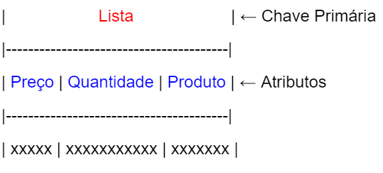
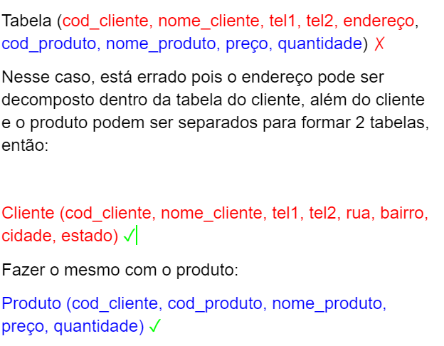
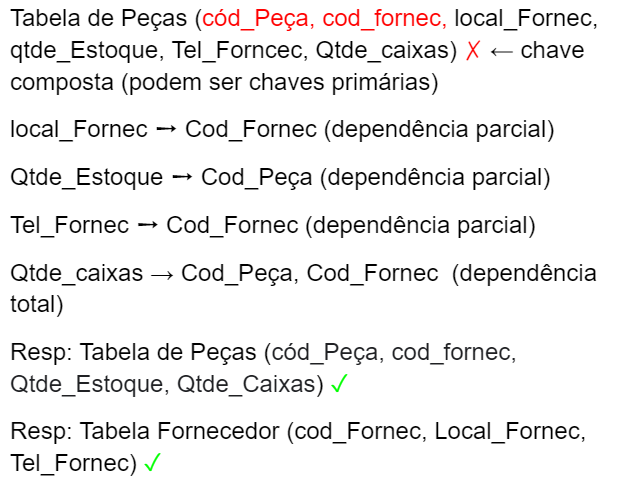
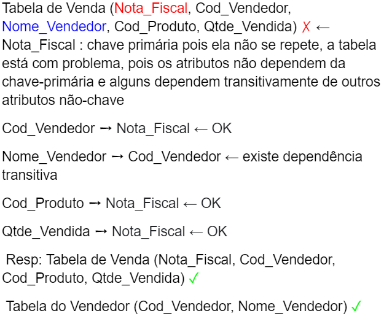

Conceitos básicos
Dados, Informação e Conhecimento
Dados são unidades que armazenam valores quaisquer (como uma variável) e podem ser acessados por meio de identificadores, tendo tamanhos variados de memória. Eles podem ser Ints, floats, strings, chars e booleanos, por exemplo.
Já o conceito de Informação se refere ao conjunto de dados ou conhecimentos que se referem a um determinado assunto ou acontecimento.
Na informática a informação pode ser a reunião dos dados processados em um computador que são capazes de gerar resultados para um determinado projeto.
Conhecimento é o fato ou a condição de saber obtida através de uma experiência, vivência, ou de uma associação.
Sistemas de bancos de dados
Oracle DataBase: Um sistema de banco de dados relacional, desenvolvido pela Oracle em 1977. Amplamente utilizado por poder ser executado em diversos Sistemas Operacionais.
Uma das ferramentas que ajudaram a popularizar este sistema é o particionamento. Esta permite o funcionamento sem interrupção, caso um dos serviços de um cluster (computadores ligados entre si que trabalham em conjunto, sendo considerados um único sistema) falhe.
SQL Server: Sistema de gerenciamento de banco de dados da Microsoft, funcionando de maneira relacional utilizando a linguagem SQL. Este sistema é uma das tecnologias de banco de dados líder no mercado, a qual possui mecanismos de processamento e armazenamento capazes de gerenciar arquivos de banco de dados, tabelas, páginas, transações, etc.
MySQL: O mySQL é um sistema de gerenciamento de banco de dados muito popular, por ter seu código fonte totalmente aberto aos usuários. Trabalha de modo onde os clientes (usuários) executam o software, se conectam ao servidor e acessam seus dados.
PostgreSQL: Funciona de maneira parecida ao MySQL, pois também tem seu código aberto, porém é reconhecido por ser ainda mais avançado.
Sua principal característica é a sua necessidade de esforços, as quais são mínimas devido a sua estabilidade. Comparando o PostgreSQL a outros sistemas, ele possui o menor custo total.
FireBird DB: Funciona também de maneira relacional com código aberto, oferece tantos recursos quanto a linguagem SQL, oferecendo assim um alto desempenho e um grande suporte a idiomas.
Alguns de seus recursos ainda são usados em bancos de dados comerciais, como: procedimentos armazenados, replicação e backups.
Modelagem de dados
Modelagem
A modelagem de dados é um processo que é usado para processar e manejar grandes quantidades de dados que são coletados, muitas vezes por empresas que atuam na área de TI.
Modelo Entidade Relacionamento: ferramenta de modelagem e representação de dados utilizada durante a fase de Modelos de dados conceituais
Entidade: representação de um conjunto de informações de algum conceito (como um user que possui Nome, Sobrenome e etc.) e ela possui atributos que são informações que se referenciam à própria imagem.
Atributos: são características dessa Entidade, que possuem informações sobre ela, como, por exemplo, o Nome, Sobrenome, Senha e Email de um user.
Relacionamento: quando algum atributo de uma Entidade está referenciado em outra imagem, estas duas entidades possuem um relacionamento (por exemplo um sistema onde o usuário recebe o valor por um móvel e esse móvel tem um valor, logo User -> Valor; Móvel -> Valor; - possuem um relacionamento)
Cardinalidade: Se refere a quantidade de relacionamentos de um elemento em outros elementos, e pode ser de 1:1 quando se tem um elemento pra uma outra entidade, 1:N quando se tem um elemento pra várias entidades, N:N quando se tem vários elementos para várias entidades
Exemplo: um User (Entidade) com seu Nome, senha, email e saldo (Atributos) anuncia um móvel (Entidade) por certo valor (Atributo) e o vende, recebendo esse mesmo valor (Relacionamento) em uma relação 1:1 (cardinalidade).
Normalização de Dados
O que é e para que serve
Normalização é uma ferramenta usada no projeto lógico que serve para reestruturar tabelas e atributos, reduzindo assim redundâncias e permitindo o correto crescimento do banco de dados. Por meio dela que bancos com muita movimentação garantem sua integridade após remoção, inserção e alteração dos dados.
O processo de normalização conta com 6 formas:
- 1FN (1° Forma Normal)
- 2FN (2° Forma Normal)
- 3FN (3° Forma Normal)
- FNBC (Forma normal de Boyce e Codd)
- 4FN (4° Forma Normal)
- 5FN (5° Forma Normal)
A partir da 3° forma normal diz-se que o banco de dados já se encontra normalizado. A FNBC, a 4FN e a 5FN são usadas para melhorar o banco mais do que já está. No entanto, alguns projetos decidem parar na 3FN pois as outras formas, dependendo da situação, podem exigir um pouco mais de processamento. Vamos abordar apenas as 3 primeiras, porque são as mais usadas. As outras são usadas em casos bem específicos.
Formas normais e suas aplicações
1FN → 2FN → 3FN
As formas normais são sequenciais, ou seja, se um banco se encontra na terceira forma normal, isso também significa que o mesmo está na segunda e também na primeira. Por isso devemos sempre começar a normalização pela primeira forma normal, para que não haja problemas mais a frente na nossa normalização.
Chave Primária e Atributos
Antes de começar a ver as formas normais, nós devemos ver primeiro as definições de chaves primárias e atributos.
Chave Primária: é o elemento principal que compõe a tabela, ou seja, é o título da tabela.
Atributos: São os elementos classificados que estão dentro da tabela
Exemplo:

Primeira Forma Normal
Podemos dizer que uma tabela se encontra na Primeira Forma Normal se:
- Possui ao menos uma chave primária;
- Não possui grupos repetitivos;
- Todos os seus atributos são únicos, ou seja, não precisa ser decomposto.
Para chegar a primeira forma normal devemos:
Fazer uma análise superficial para determinar o atributo que possui característica de chave primária, tornar todos atributos únicos, transformar o grupo repetitivo em uma nova tabela, levando a chave primária da tabela na qual estava, para manter a ligação entre a tabela criada e a original. Depois aplicamos também sobre essa nova tabela a primeira forma normal.
Exemplo:

Segunda Forma Normal
Podemos dizer que uma tabela se encontra na Segunda Forma Normal se:
- Está na primeira forma normal;
- Possui dependência Total de outros atributos.
Para chegar à segunda forma normal verifique se existe chave composta, se não, então ele já está na 2° forma normal, se sim, então verifique todos os atributos da relação que dependem de todos os atributos que compõem a chave primária. Por exemplo, se a chave primária é composta dos atributos A, B e o campo C em questão depende somente de B. Se sim, já está na segunda forma normal. Se não, pegue o atributo B que não depende totalmente de outros atributos e crie uma nova tabela.
Exemplo: (Obs: ➙ significa “depende de…”).

Terceira Forma Norma
Podemos dizer que uma tabela se encontra na Terceira Forma Normal se:
- Está na segunda forma normal;
- Não existirem Dependências Transitivas;
- A tabela não deve ter um atributo não-chave determinado funcionalmente por outro atributo não-chave;
- NÃO deve haver dependência transitiva de um atributo não-chave sobre a chave primária;
- Deve-se decompor e montar uma nova tabela que inclua os atributos não-chave que determinam funcionalmente outros atributos não-chave.
Se nenhum dos campos foram determinados transitivamente pela chave primária. Para chegar à terceira forma normal verifique os campos que não são chave primária. Se algum desses campos não chave possuir dependência com outro campo não chave, então essa tabela não se encontra na terceira forma normal, Para cada atributo não-chave que for um determinante na tabela, crie uma nova tabela, e esse atributo será a chave primária na nova tabela.
Exemplo:
